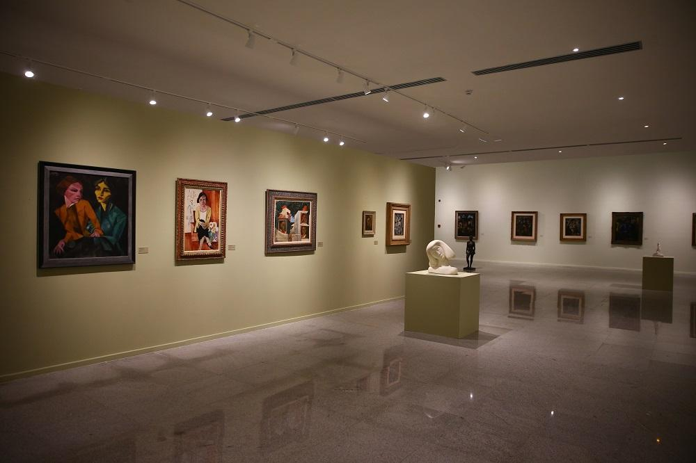
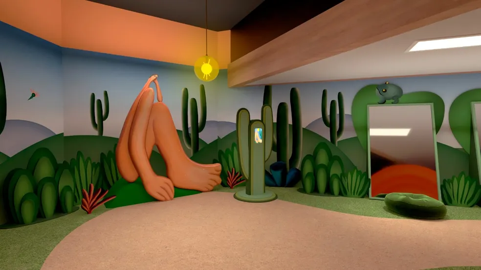
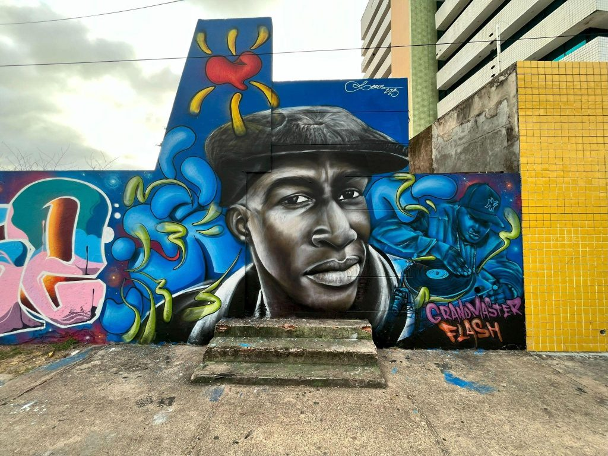

Exposições em Destaque
Fique por dentro dos principais eventos e mostras de arte brasileira pelo país.

Mostra Brasil Moderno
Local: MASP, São Paulo
Data: 10/08 a 20/10
Uma exposição com foco na produção artística dos anos 1920 a 1950.

Tarsila Viva
Local: CCBB, Brasília
Data: 15/09 a 30/11
Uma jornada imersiva pela vida e obra de Tarsila do Amaral.

Arte Urbana em Pauta
Local: Museu da Arte Brasileira, SP
Data: 01/10 a 15/12
Destaque para murais, grafite e expressões urbanas contemporâneas.